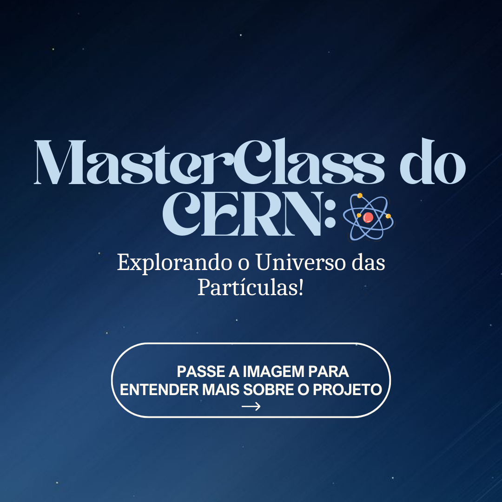
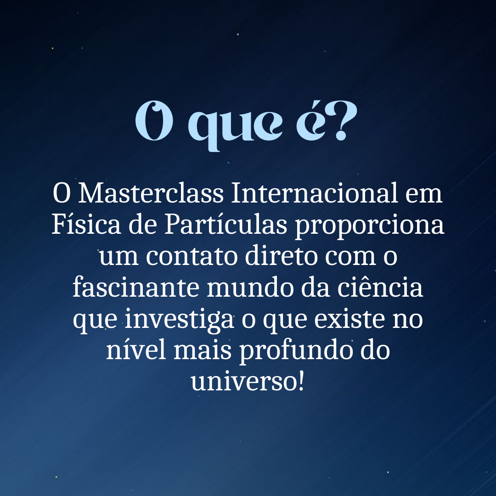
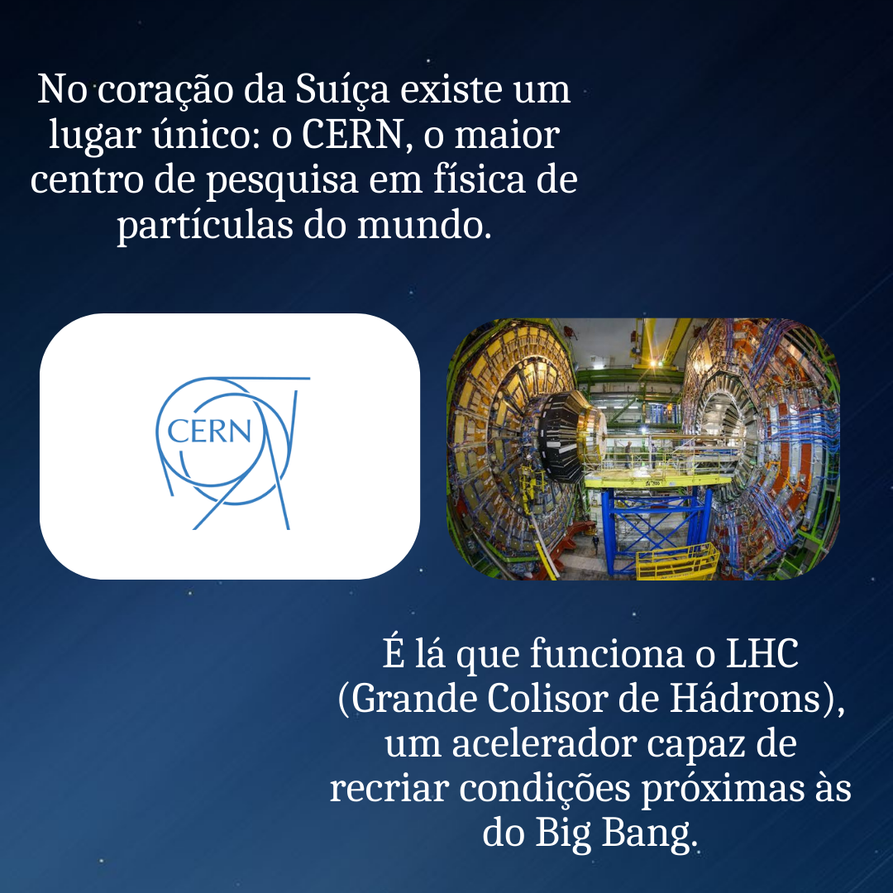
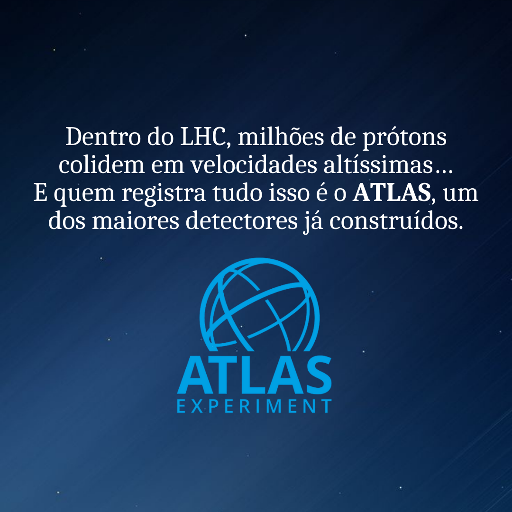
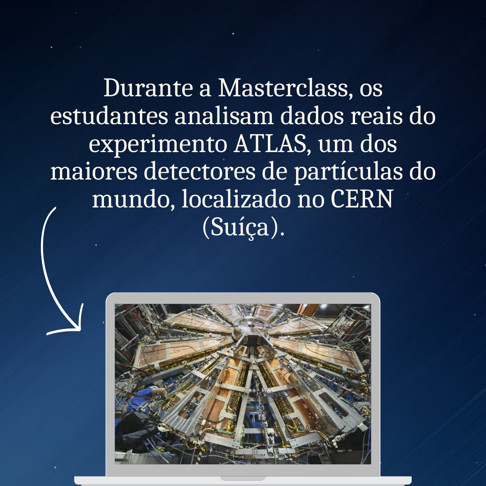
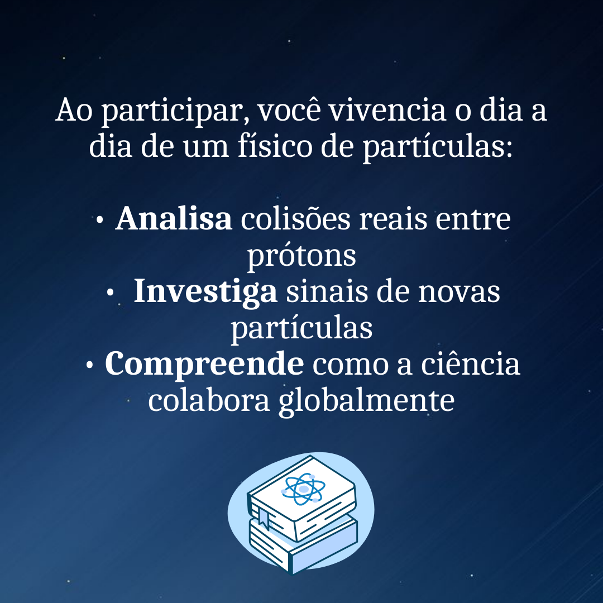

A International Physics Masterclasses é um projeto educacional global ligado ao CERN e coordenado pelo IPPOG. Em outubro de 2025, o IFSC - Câmpus São Lourenço do Oeste foi uma das instituições brasileiras a sediar esse evento. Sendo essa sua primeira edição no campos.
Voltado principalmente para estudantes do ensino médio e professores, a masterclass tem como objetivo aproximar o publico do ambiente de pesquisa em física de partículas, promovendo palestras introdutórias sobre o Modelo Padrão, aceleradores e detectores, além de mostrar como a ciência é feita em grandes colaborações internacionais, como as do LHC.
O projeto busca proporcionar a experiência prática de pesquisadores em física de partículas. Durante o evento, os estudantes assumem o papel de jovens pesquisadores, analisando dados reais produzidos por detectores do CERN, interpretando resultados e discutindo suas conclusões com colegas e cientistas, simulando assim o ambiente colaborativo de grandes experimentos.
Essas atividades práticas ajudam a transformar o conhecimento teórico em experiência concreta, estimulando habilidades de raciocínio crítico, comunicação e colaboração para todos os envolvidos. Mais do que aprender física, os participantes mergulham em um processo científico real, desenvolvendo competências valiosas para sua formação.
📌 Atualmente, as inscrições para a Masterclass Internacional de Física do CERN no IFSC – Campus São Lourenço do Oeste não estão abertas. Em breve, o formulário será disponibilizado neste site com todas as orientações.
✨ Enquanto isso, confira nossos materiais ou resultados e acompanhe os canais oficiais para garantir sua participação assim que as inscrições forem abertas! 🚀
Acesse mais informações logo a seguir